内容要点
🎨家人们！东哥带着超实用的 LR 亮度工具修图干货来啦，零基础也能轻松上手～ 📌修图前先回忆，亮度从暗到明分 5 个区域：黑色 - 阴影 - 曝光 - 高光 - 白色，对应 LR 里的黑色色阶（最暗） - 阴影（较暗） - 曝光度（正常亮度） - 高光（较亮） - 白色色阶（最亮）。（图2） [种草R]一般照片中，黑白区域占比少，主体在中间 3 个区域，暗黑调等特殊风格除外。 ✨曝光度工具 [种草R]特性：显著影响照片整体明暗，适合整体偏暗或偏亮的片子。 [种草R]实操：碰到像图 3 那种整体暗且细节难辨的照片，往右拉曝光度滑块，瞬间提亮。但提亮后高光易过曝（图4），需高光或白色色阶工具配合调控（图5），暗部若死黑（图6）则用阴影或黑色色阶辅助（图7）。 🌤高光 & 白色色阶 [种草R]特性：精准作用于高光和白色区域，对其他区域影响小，适用于多数区域明暗正常，仅亮部过亮的片子。 [种草R]实操：图 8 天空过亮，左移高光滑块降亮度，再用白色色阶微调，能找回细节，且基本不影响其他部分（图9）。 🌑阴影 & 黑色色阶 [种草R]特性：专门拯
知识结构
🎨家人们！东哥带着超实用的 LR 亮度工具修图干货来啦，零基础也能轻松上手～
🎨家人们！东哥带着超实用的 LR 亮度工具修图干货来啦，零基础也能轻松上手～
🎨家人们！东哥带着超实用的 LR 亮度工具修图干货来啦，零基础也能轻松上手～
🎨家人们！东哥带着超实用的 LR 亮度工具修图干货来啦，零基础也能轻松上手～
- 🎨家人们！东哥带着超实用的 LR 亮度工具修图干货来啦，零基础也能轻松上手～ 📌修图前先回忆，亮度从暗到明分 5 个区域：黑色 - 阴影 - 曝光 - 高光 - 白色，对应 LR 里的黑色色阶（最暗） - 阴影（较暗） - 曝光度（正常亮度） - 高光（较亮） - 白色色阶（最亮）。（图2） [种草R]一般照片中，黑白区域占比少，主体在中间 3 个区域，暗黑调等特殊风格除外。 ✨曝光度工具 [种草R]特性：显著影响照片整体明暗，适合整体偏暗或偏亮的片子。 [种草R]实操：碰到像图 3 那种整体暗且细节难辨的照片，往右拉曝光度滑块，瞬间提亮。但提亮后高光易过曝（图4），需高光或白色色阶工具配合调控（图5），暗部若死黑（图6）则用阴影或黑色色阶辅助（图7）。 🌤高光 & 白色色阶 [种草R]特性：精准作用于高光和白色区域，对其他区域影响小，适用于多数区域明暗正常，仅亮部过亮的片子。 [种草R]实操：图 8 天空过亮，左移高光滑块降亮度，再用白色色阶微调，能找回细节，且基本不影响其他部分（图9）。 🌑阴影 & 黑色色阶 [种草R]特性：专门拯
🎨家人们！东哥带着超实用的 LR 亮度工具修图干货来啦，零基础也能轻松上手～ 📌修图前先回忆，亮度从暗到明分 5 个区域：黑色 - 阴影 - 曝光 - 高
1/13–4/13封面/要点：🎨家人们！东哥带着超实用的 LR 亮
🎨家人们！东哥带着超实用的 LR 亮度工具修图干货来啦，零基础也能轻松上手～ 📌修图前先回忆，亮度从暗到明分 5 个区域：黑色 - 阴影 - 曝光 - 高光 - 白色，对应 LR 里的黑色色阶（最暗） - 阴影（较暗） - 曝光度（正常亮度） - 高光（较亮） - 白色色阶（最亮）。（图2） [种草R]一般照片中，黑白区域占比少，主体在中间 3 个区域，暗黑调等特殊风格除外。 ✨曝光度工具 [种草R]特性：显著影响照片整体明暗，适合整体偏暗或偏亮的片子。 [种草R]实操：碰到像图 3 那种整体暗且细节难辨的照片，往右拉曝光度滑块，瞬间提亮。但提亮后高光易过曝（图4），需高光或白色色阶工具配合调控（图5），暗部若死黑（图6）则用阴影或黑色色阶辅助（图7）。 🌤高光 & 白色色阶 [种草R]特性：精准作用于高光和白色区域，对其他区域影响小，适用于多数区域明暗正常，仅亮部过亮的片子。 [种草R]实操：图 8 天空过亮，左移高光滑块降亮度，再用白色色阶微调，能找回细节，且基本不影响其他部分（图9）。 🌑阴影 & 黑色色阶 [种草R]特性：专门拯
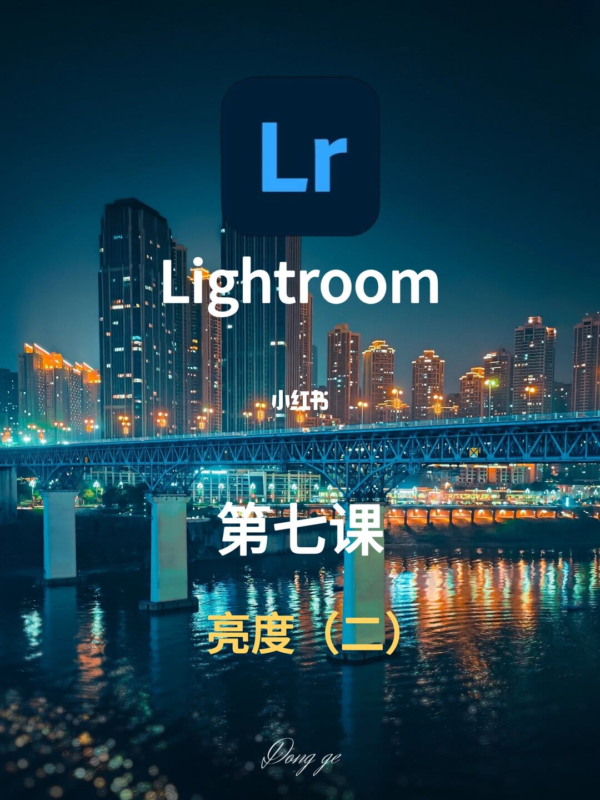
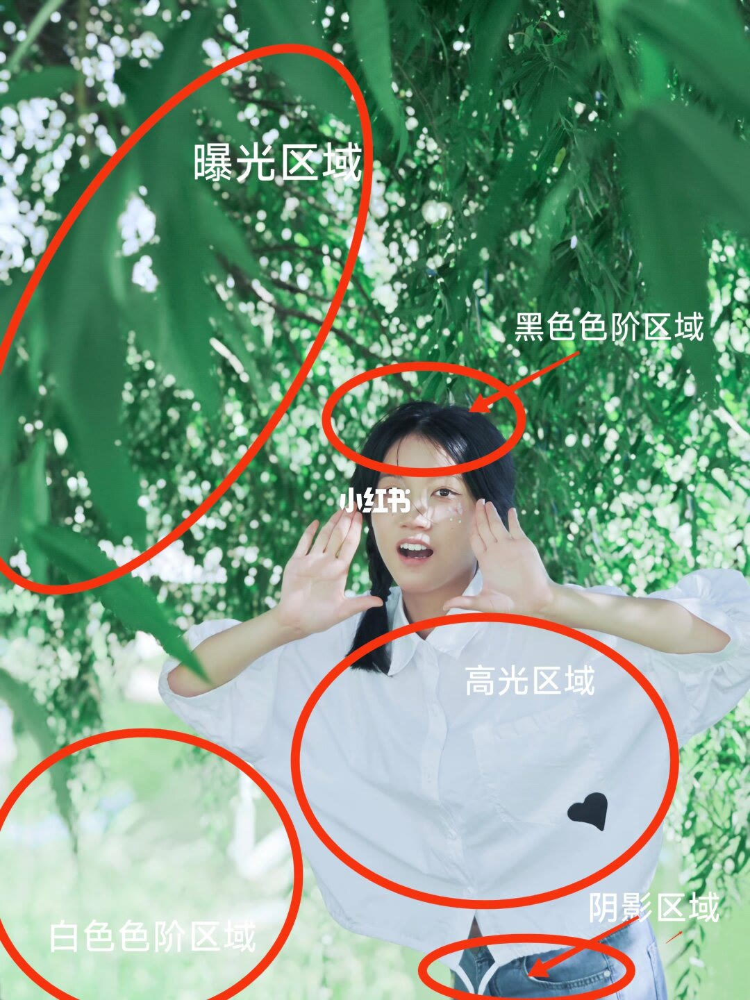
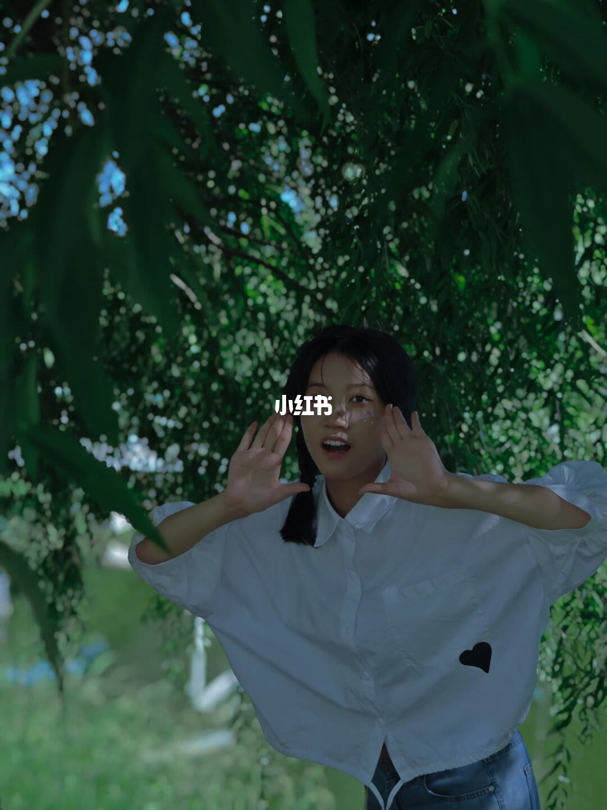
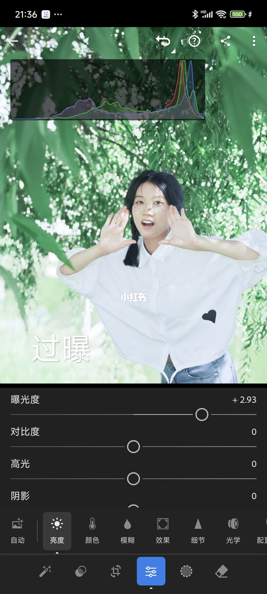
5/13–8/13第5/13页：必学！｜LR亮度工具保姆级实操教程
🎨家人们！东哥带着超实用的 LR 亮度工具修图干货来啦，零基础也能轻松上手～ 📌修图前先回忆，亮度从暗到明分 5 个区域：黑色 - 阴影 - 曝光 - 高光 - 白色，对应 LR 里的黑色色阶（最暗） - 阴影（较暗） - 曝光度（正常亮度） - 高光（较亮） - 白色色阶（最亮）。（图2） [种草R]一般照片中，黑白区域占比少，主体在中间 3 个区域，暗黑调等特殊风格除外。 ✨曝光度工具 [种草R]特性：显著影响照片整体明暗，适合整体偏暗或偏亮的片子。 [种草R]实操：碰到像图 3 那种整体暗且细节难辨的照片，往右拉曝光度滑块，瞬间提亮。但提亮后高光易过曝（图4），需高光或白色色阶工具配合调控（图5），暗部若死黑（图6）则用阴影或黑色色阶辅助（图7）。 🌤高光 & 白色色阶 [种草R]特性：精准作用于高光和白色区域，对其他区域影响小，适用于多数区域明暗正常，仅亮部过亮的片子。 [种草R]实操：图 8 天空过亮，左移高光滑块降亮度，再用白色色阶微调，能找回细节，且基本不影响其他部分（图9）。 🌑阴影 & 黑色色阶 [种草R]特性：专门拯
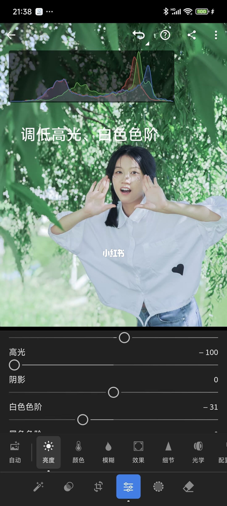
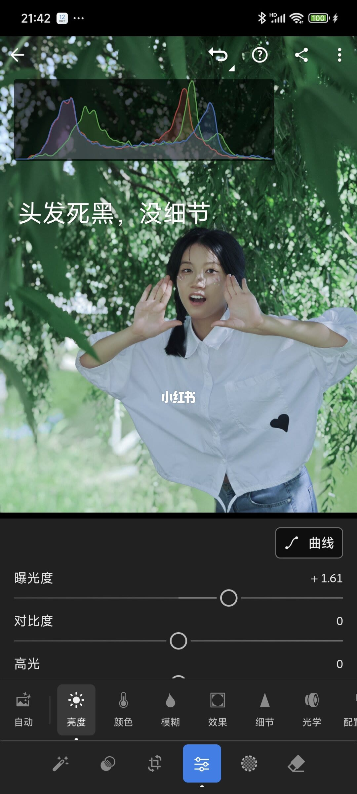
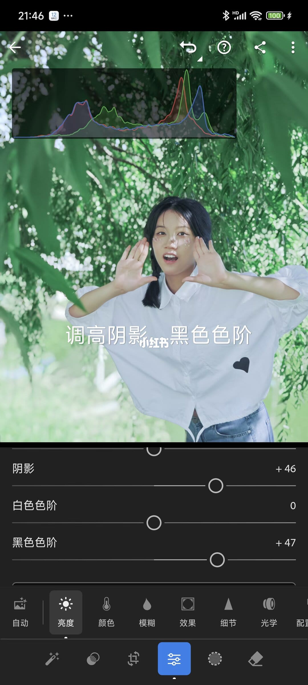
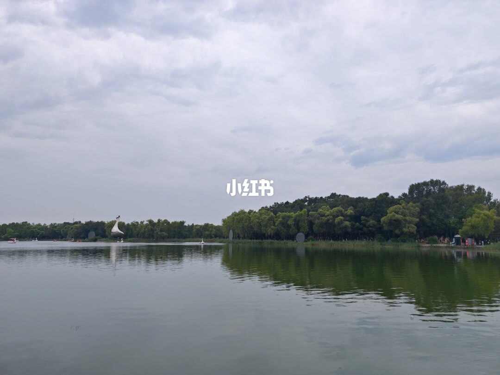
9/13–12/13第9/13页：必学！｜LR亮度工具保姆级实操教程
🎨家人们！东哥带着超实用的 LR 亮度工具修图干货来啦，零基础也能轻松上手～ 📌修图前先回忆，亮度从暗到明分 5 个区域：黑色 - 阴影 - 曝光 - 高光 - 白色，对应 LR 里的黑色色阶（最暗） - 阴影（较暗） - 曝光度（正常亮度） - 高光（较亮） - 白色色阶（最亮）。（图2） [种草R]一般照片中，黑白区域占比少，主体在中间 3 个区域，暗黑调等特殊风格除外。 ✨曝光度工具 [种草R]特性：显著影响照片整体明暗，适合整体偏暗或偏亮的片子。 [种草R]实操：碰到像图 3 那种整体暗且细节难辨的照片，往右拉曝光度滑块，瞬间提亮。但提亮后高光易过曝（图4），需高光或白色色阶工具配合调控（图5），暗部若死黑（图6）则用阴影或黑色色阶辅助（图7）。 🌤高光 & 白色色阶 [种草R]特性：精准作用于高光和白色区域，对其他区域影响小，适用于多数区域明暗正常，仅亮部过亮的片子。 [种草R]实操：图 8 天空过亮，左移高光滑块降亮度，再用白色色阶微调，能找回细节，且基本不影响其他部分（图9）。 🌑阴影 & 黑色色阶 [种草R]特性：专门拯
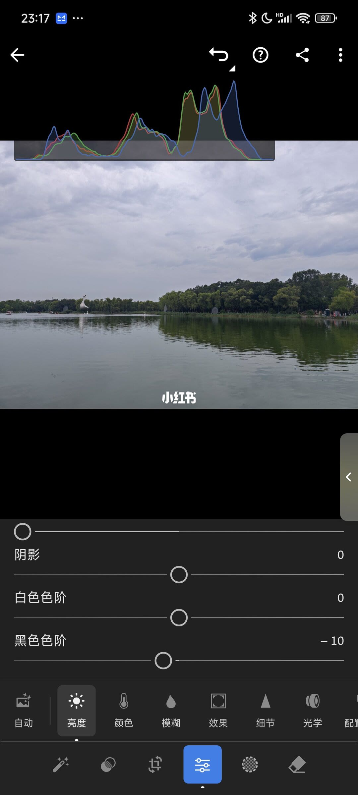
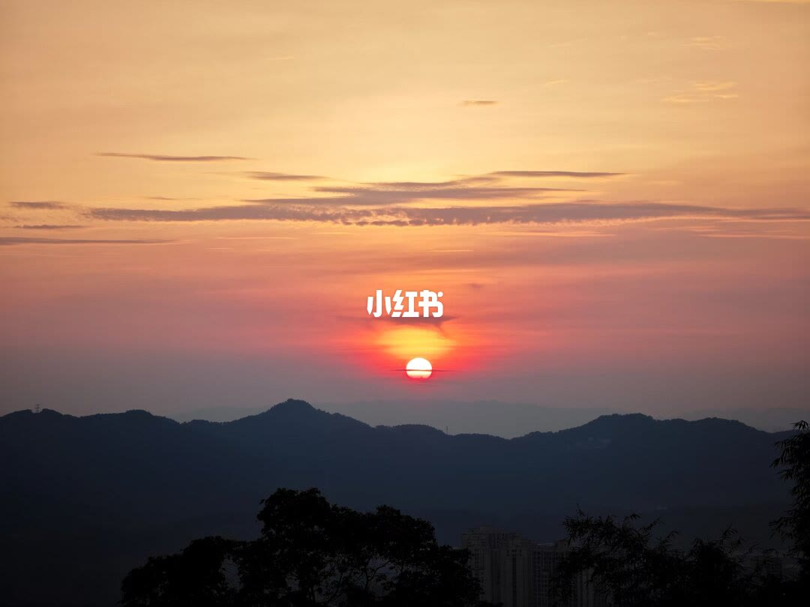
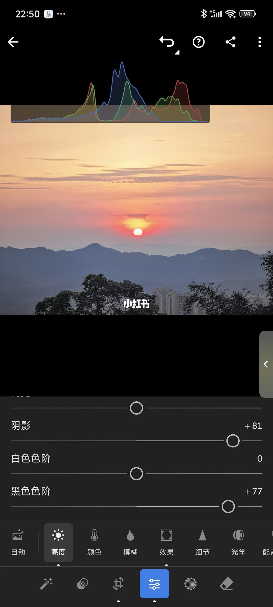
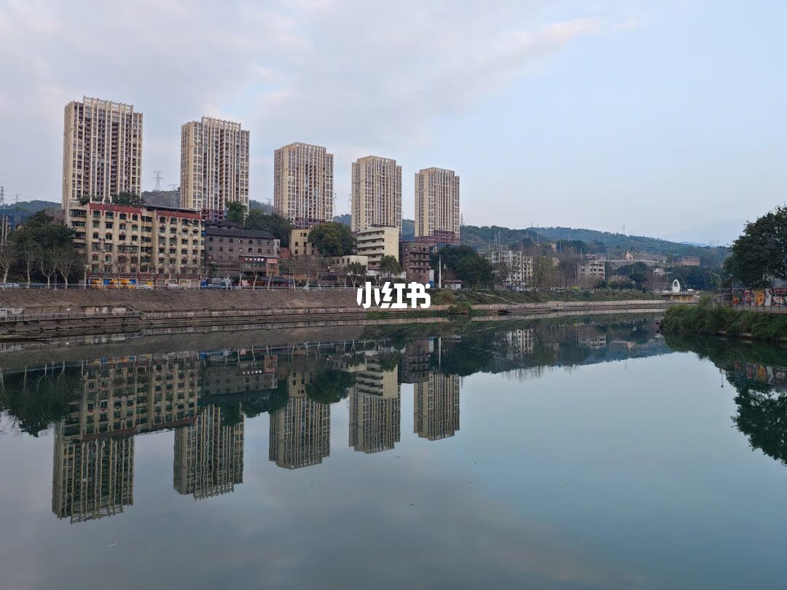
13/13–13/13第13/13页：必学！｜LR亮度工具保姆级实操教
🎨家人们！东哥带着超实用的 LR 亮度工具修图干货来啦，零基础也能轻松上手～ 📌修图前先回忆，亮度从暗到明分 5 个区域：黑色 - 阴影 - 曝光 - 高光 - 白色，对应 LR 里的黑色色阶（最暗） - 阴影（较暗） - 曝光度（正常亮度） - 高光（较亮） - 白色色阶（最亮）。（图2） [种草R]一般照片中，黑白区域占比少，主体在中间 3 个区域，暗黑调等特殊风格除外。 ✨曝光度工具 [种草R]特性：显著影响照片整体明暗，适合整体偏暗或偏亮的片子。 [种草R]实操：碰到像图 3 那种整体暗且细节难辨的照片，往右拉曝光度滑块，瞬间提亮。但提亮后高光易过曝（图4），需高光或白色色阶工具配合调控（图5），暗部若死黑（图6）则用阴影或黑色色阶辅助（图7）。 🌤高光 & 白色色阶 [种草R]特性：精准作用于高光和白色区域，对其他区域影响小，适用于多数区域明暗正常，仅亮部过亮的片子。 [种草R]实操：图 8 天空过亮，左移高光滑块降亮度，再用白色色阶微调，能找回细节，且基本不影响其他部分（图9）。 🌑阴影 & 黑色色阶 [种草R]特性：专门拯
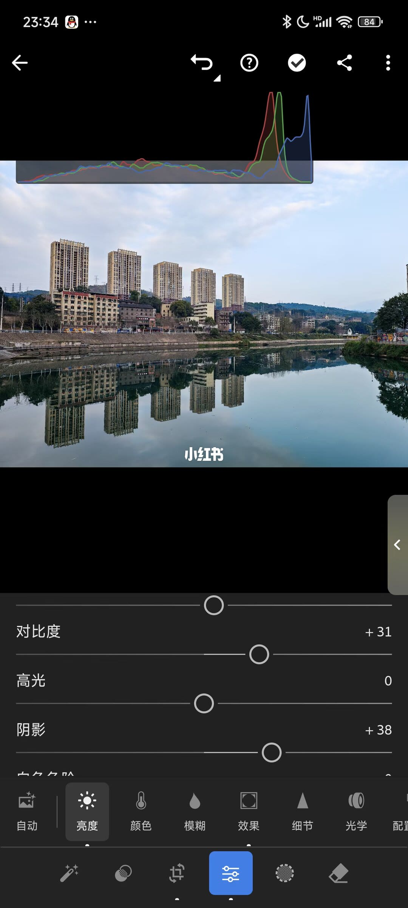
口述/画面要点（13段）
结合 Whisper medium 与画面大字整理；专有名词已校对。
封面/要点：🎨家人们！东哥带着超实用的 LR 亮度工具修图干货来啦，零基础也能轻松上手～
第2/13页：必学！｜LR亮度工具保姆级实操教程来了！
第3/13页：必学！｜LR亮度工具保姆级实操教程来了！
第4/13页：必学！｜LR亮度工具保姆级实操教程来了！
第5/13页：必学！｜LR亮度工具保姆级实操教程来了！
第6/13页：必学！｜LR亮度工具保姆级实操教程来了！
第7/13页：必学！｜LR亮度工具保姆级实操教程来了！
第8/13页：必学！｜LR亮度工具保姆级实操教程来了！
第9/13页：必学！｜LR亮度工具保姆级实操教程来了！
第10/13页：必学！｜LR亮度工具保姆级实操教程来了！
第11/13页：必学！｜LR亮度工具保姆级实操教程来了！
第12/13页：必学！｜LR亮度工具保姆级实操教程来了！
第13/13页：必学！｜LR亮度工具保姆级实操教程来了！